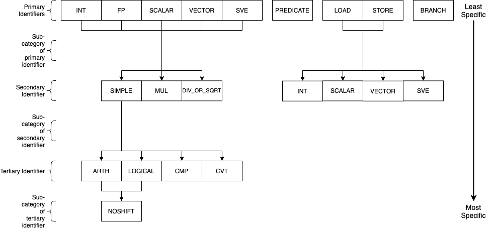

AArch64¶
SimEng provides a basic implementation of the 64-bit AArch64 architecture, part of the ARMv8-a ISA. This implementation provides support for decoding and executing a range of common instructions, sufficient to run a number of simple benchmarks. It is also capable of handling supervisor call (syscall) exceptions via basic system call emulation, allowing the execution of programs that have been statically compiled with the standard library.
Contents
Decoding¶
Instruction decoding is performed using the Capstone disassembly framework. The disassembly generated by Capstone is used to determine the properties, operands, and execution behaviour of the corresponding instruction.
The logic held in src/lib/arch/aarch64/Instruction_decode.cc is primarily associated with converting the provided Capstone instruction metadata into the appropriate SimEng instruction format. Additionally, an instruction’s identifiers are defined here through operand usage and opcode values. For the AArch64 architecture model, the following identifiers are defined:
isScalarData_, operates on scalar values.isVectorData_, operates on vector values.isSVEData_, uses Z registers as source and/or destination operands.isNoShift_, doesn’t have a shift operand.isLogical_, is a logical operation.isCompare_, is a compare operation.isConvert_, is a convert operation.isMultiply_, is a multiply operation.isDivideOrSqrt_, is a divide or square root operation.isPredicate_, writes to a predicate register.isLoad_, is a load operation.isStore_, is a store operation.isBranch_, is a branch operation.isRET_, is a return instruction.isBL_, is a branch and link instructions.
Instruction Groups¶
Through a combination of the above identifiers, an instruction can be allocated an instruction group. The instruction groups available to the AArch64 ISA are detailed below:
The above diagram describes the instruction groups currently implemented for the AArch64 ISA. Each level of the diagram represents a different scope of instructions supported, the primary/top-level encapsulates the most instructions whilst the tertiary/bottom-level the least. The naming convention of the AArch64 instruction groups combines each of the levels within the above diagram through _ characters, the top level is used first and connected to the required lower levels following the relationships shown. For example, to express an instruction group containing integer logical operations without any shift operands, the group INT_SIMPLE_LOGICAL_NOSHIFT would be used. Another example for all operations (excluding loads and stores) that operate on vector values would simply be VECTOR. The groups/subgroups chosen in the above diagram are derived from common separations in execution unit support and execution latencies of studied HPC processors.
This hierarchy-based naming convention has been chosen to provide the user with greater control over the number of instructions grouped under one name, whilst also remaining intuitive. A variety of combinations/instruction scopes can be defined through this method and only uses a small set of easily interpreted operation descriptions.
If the supplied instruction groups don’t provide a small enough scope, a Capstone opcode can be used instead (found in SimEng/external/capstone/arch/AArch64/AArch64GenInstrInfo.inc) with the format ~{CAPSTONE_OPCODE}.
Implementation¶
The available instruction groups can be found in SimEng/src/include/simeng/arch/aarch64/Instruction.hh under the InstructionGroups namespace. The implementation of the relationship between groups, as described in the above diagram, can be found in the same file as an unordered_map named groupInheritance. The keys of groupInheritance represent the parent node of the relationship and the values, the children nodes. The relationships defined by one entry of the groupInheritance map only represents a single parent-child relationship, therefore, the reading of groupInheritance relationships are performed recursively. This decision was made to reduce the amount of code used in the instantiation of the groupInheritance object.
The getGroup() function in SimEng/src/lib/arch/aarch64/Instruction.cc contains the logic for converting an instructions’ identifiers to an instruction group. The InstructionGroups namespace has been ordered such that each data type group (INT, SCALAR, etc) is followed by the set of possible operation type groups (*_SIMPLE_ARTH, *_MUL, etc). A combination of a base and a relative offset value is used to implement the conversion. The base value is defined as one of the data type groups, whilst the relative offset value represents an operation type group. For those groups that don’t conform to this relationship, e.g. BRANCH or PREDICATE, a simple conditional clause is defined.
Additional information¶
The FP primary identifier is a placeholder to denote both the SCALAR and VECTOR primary identifiers such that, amongst the other combinations, FP_SIMPLE_ARTH expands to be SCALAR_SIMPLE_ARTH and VECTOR_SIMPLE_ARTH. In some cases it was unnecessary and inconvenient to separate SCALAR and VECTOR operations within configuration options, therefore, this instruction group option was provided to solve the issue.
When setting the latencies for instruction groups, within the Latencies section of the configurable options, the inheritance between instruction groups is taken into account (e.g. the VECTOR group latency assignment would be inherited by all VECTOR_* groups). If multiple entries could assign a latency value to an instruction group, the option with the least levels of inheritance to the instruction group takes priority. As an example, take the groups INT_SIMPLE and INT_SIMPLE_ARTH. INT_SIMPLE_ARTH_NOSHIFT inherits from both of these groups but because INT_SIMPLE_ARTH has one less level of inheritance to traverse, INT_SIMPLE_ARTH_NOSHIFT inherits INT_SIMPLE_ARTH latency values.
Adding instructions¶
Due to the vast number of AArch64 instruction variants, instructions are only added to this architecture as encountered in programs using them; as a result, to run a new program it will likely be necessary to add support for a number of instructions.
Note
When adding support for new instructions, it’s recommended to run SimEng in emulation mode for both speed, and for an execution flow that’s easier to follow.
When you first run the new program through SimEng, execution will occur as normal until an unsupported instruction reaches the retirement point. This will then generate an illegal instruction exception, which the architecture will catch and provide a useful output before terminating. An example of the expected output is below:
Encountered execution not-yet-implemented exception
Generated by instruction:
0x00000000004004a8: f3 0f 1e f8 str x19, [sp, #-0x20]!
opcode ID: 1920
Halting due to fatal exception
This information includes the program address of the unrecognised instruction, the bytes of the encoded instruction, and the textual representation of the instruction. An “opcode ID” is also provided: this corresponds to a specific value in the simeng::arch::aarch64::Opcode namespace, imported from Capstone.
Adding execution behaviour¶
The first step to add a new instruction (and the only, for many instructions) is to add a new entry into the execution behaviour table found in src/lib/arch/aarch64/Instruction_execute.cc. These entries are responsible for reading the input operands and generating one or more results that may be read by the model handling the instruction. The entry should be uniquely identified by the namespace entry corresponding to the opcode ID presented by SimEng when the unsupported instruction was encountered.
There are several useful variables that execution behaviours have access to:
operandsThis is a vector of
RegisterValue, with each value corresponding to one of the input operands. For most instructions,operands[0]will be the second operand as written textually, as the first operand is typically the destination register. E.g., for the instructionadd w0, w1, w2,operands[0]will correspond tow1and[1]tow2.Some instructions have “implicit” register reads: these are added to the start of the operand array. E.g., the instruction
b.ne #16implicitly reads the “NZCV” flags. In this case,operands[0]will be the value of the flag register.Some instructions have operands to which they both read and write, such as
fmla v0.d, v1.d, v2.dboth writing to and reading fromv0.d; in this case,operands[0]isv0.d, and[1]and[2]arev1.dandv2.drespectively.Instructions such as stores may not have any destination registers at all. In these cases, the
operandindices match the positions as they appear: the first operand is[0], the second[1], and so on.resultsThis is the output vector, into which
RegisterValueinstances containing the results should be placed. Each entry in the vector corresponds to a destination register.Some instructions have “implicit” destination registers: in these cases, the implicit destinations are added to the start of the results vector. For example,
subs w0, w1, #1writes explicitly tow0, but also implicitly sets the “NZCV” comparison flags. In this case,results[0]is expected to be the updated NZCV flags, whileresults[1]is expected to be the new value ofw0.Memory instructions may have a “writeback” variant, where the register containing the address is updated by an offset during execution. In these cases, the address register is added as a destination after the other registers, corresponding with the textual representation of the registers. E.g., the instruction
ldr x1, [x2, #8]!will expect the value ofx1inresults[0], while the updated addressx2should be placed inresults[1].metadataEach instruction stores a simplified form of the full disassembly metadata generated by Capstone. This is stored in the
metadatamember variable, and is of typeInstructionMetadata. The metadata object contains anmetadata.operandsarray with entries corresponding to the textual operands of the instruction. Note: Unlike the instruction’soperandsmember variable,metadata.operandsentries correspond directly to their textual equivalent. For example, in the instructionadd w0, w1, w2,metadata.operands[0]will describew0,[1]describesw1, and so on.The primary use for this data is to retrieve immediate values. For example, with the instruction
add w0, w1, #1,metadata.operands[2].immwould contain the value1. Floating point immediates are similarly available, using.fpin place of.imm.For memory operations, the entire memory address section is treated as a single
metadata.operandsentry, with information available undermetadata.operands[n].mem. For example, for the instructionldr x0, [sp, #8],metadata.operands[1].memcontains information on the[sp, #8]block, withmetadata.operands[1].mem.dispcontaining the specified offset of8.
SimEng supports the ARM SVE extension and thus the use of Z vector registers. Z registers are an extension of the ARM NEON V vector registers whereby the V register variant occupies the lower 16 bytes of the Z registers total 256 bytes. Under the ARM SVE extension, the implemented logic for writing to a V register is to zero-out the upper 240 bytes of the associated Z register (e.g. z1 and v1) and treat its lower 16 bytes as the V register. SimEng will automatically apply this logic when the execution of an instruction contains a V register as a destination location.
cstool¶
Capstone provides a cstool utility, which provides a visual representation of the metadata information available for any given instruction. For example, feeding it the bytes for the str instruction displayed above results in the following:
$ cstool -d arm64 f30f1ef8
0 f3 0f 1e f8 str x19, [sp, #-0x20]!
op_count: 2
operands[0].type: REG = x19
operands[0].access: READ
operands[1].type: MEM
operands[1].mem.base: REG = sp
operands[1].mem.disp: 0xffffffe0
operands[1].access: READ | WRITE
Write-back: True
Registers read: x19 sp
Registers modified: sp
Zero registers¶
AArch64 provides two zero registers, WZR and XZR, which are always read as 0. This implementation mirrors that behaviour, and will automatically populate the relevant operands entry with a 0-value RegisterValue.
For instructions that are capable of generating multiple results (typically flag-setting instructions), they can claim to write to one of the zero registers: in these cases, the result is discarded. This implementation supports this behaviour, and reduces the number of available results entries accordingly.
Loads and stores¶
In addition to an execution behaviour, memory instructions also require a new entry in the address generation behaviour table found in src/lib/arch/aarch64/Instruction_address.cc. These entries are responsible for describing the method used to generate the addresses that these instructions will read from or write to.
Address generation is expected to generate one or more instances of MemoryAddressTarget, containing an address and the number of bytes to access. The same variables described above (operands, metadata) are available to use to generate these addresses.
Once the addresses have been generated, they should be supplied in a vector to the setMemoryAddresses helper function.
Instruction aliases¶
As Capstone is primarily a disassembler, it will attempt to generate the correct aliases for instructions: for example, the cmp w0, #0 instruction is an alias for subs wzr, w0, #0. As it’s the underlying instruction that is of use (in this case, the subs instruction), this implementation includes a de-aliasing component that reverses this conversion. The logic for this may be found in src/lib/arch/aarch64/InstructionMetadata.
If a known but unsupported alias is encountered, it will generate an invalid instruction error, and the output will identify the instruction as unknown in place of the usual textual representation. It is recommended to reference a disassembled version of the program to identify what the instruction at this address should be correctly disassembled to, and implement the necessary dealiasing logic accordingly.